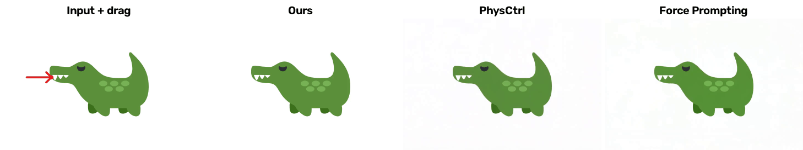
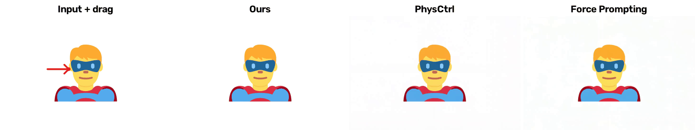
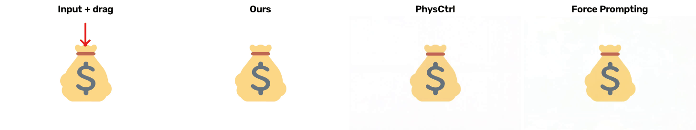
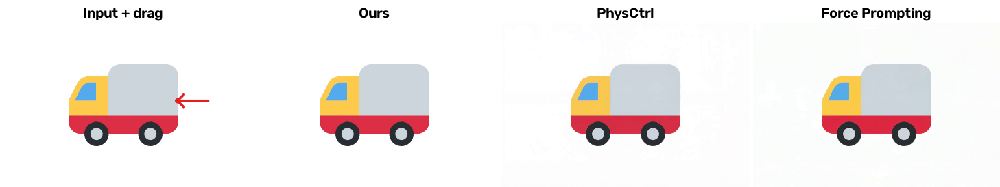
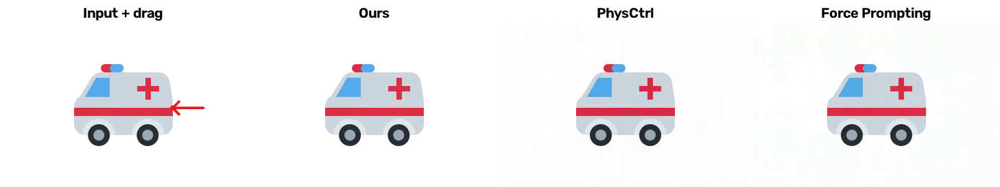
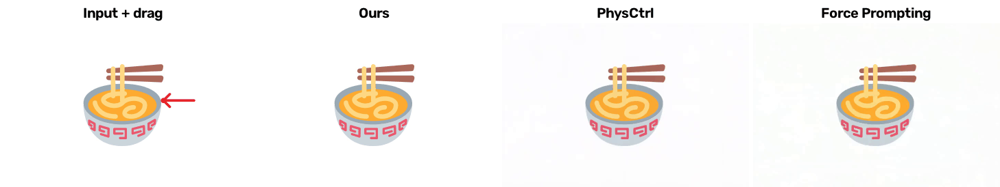
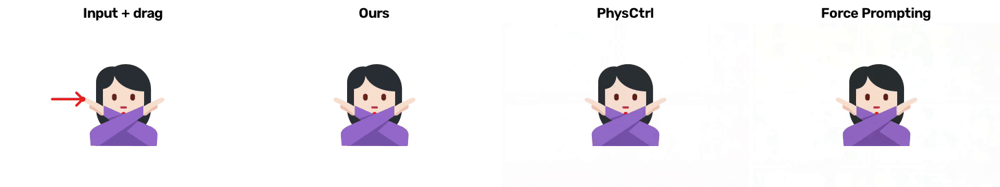
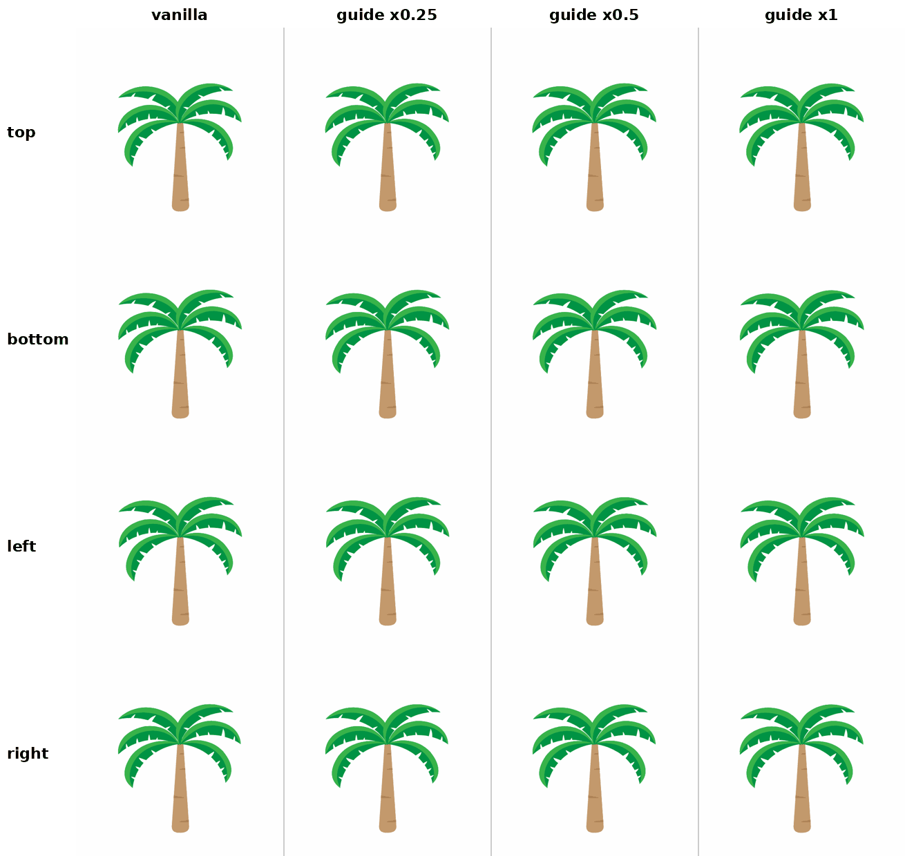

DragPhysSVG:
Structured Particle Dynamics
for SVG Animation
01 / COMPARISONSComparison with physical-video
Comparison with physical-video
generation methods
We compare against both physical-video generation methods, PhysCtrl and Force Prompting, using the same input and drag.







Swipe across each figure to view all methods.
02 / GUIDANCE STRENGTH
Effect of the guidance strength
A comparison of guidance at strengths of 0 (vanilla), 0.25×, 0.5×, and 1×, with drags from the top, bottom, left, and right.

Swipe across the figure to view all guidance strengths.